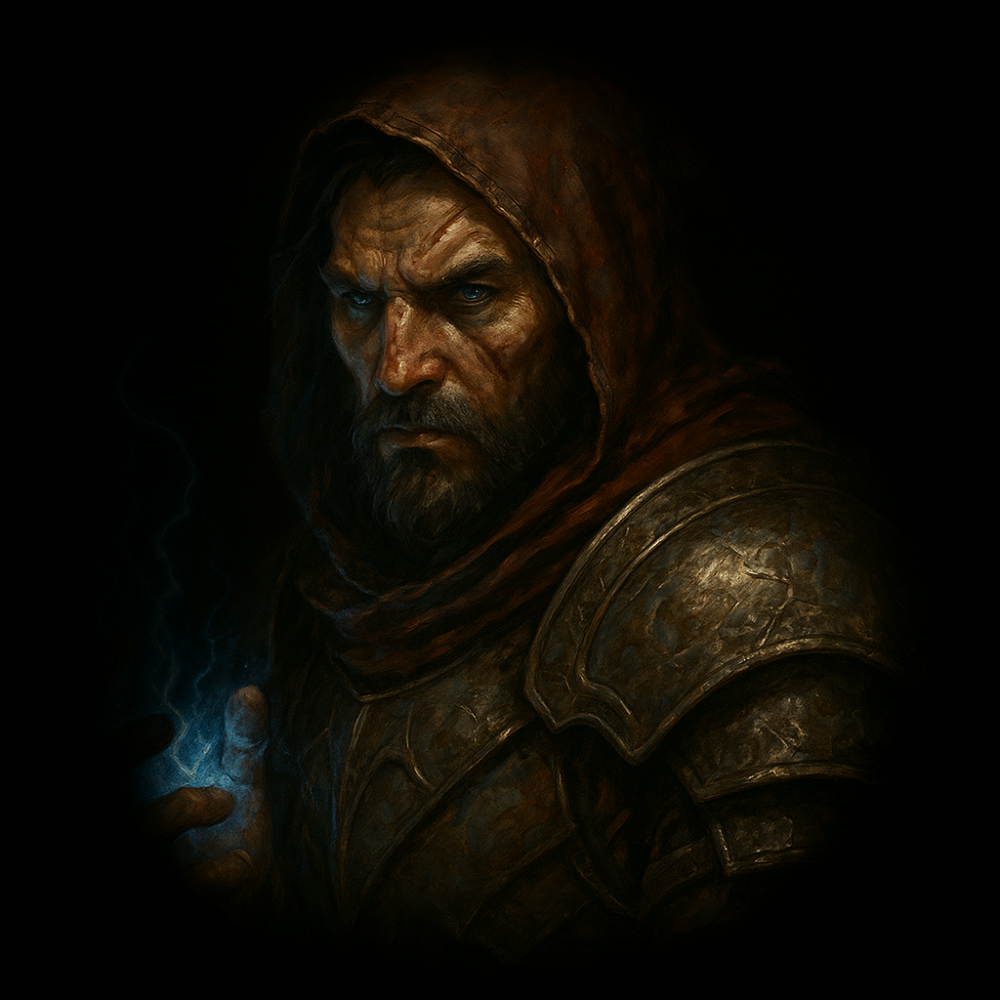
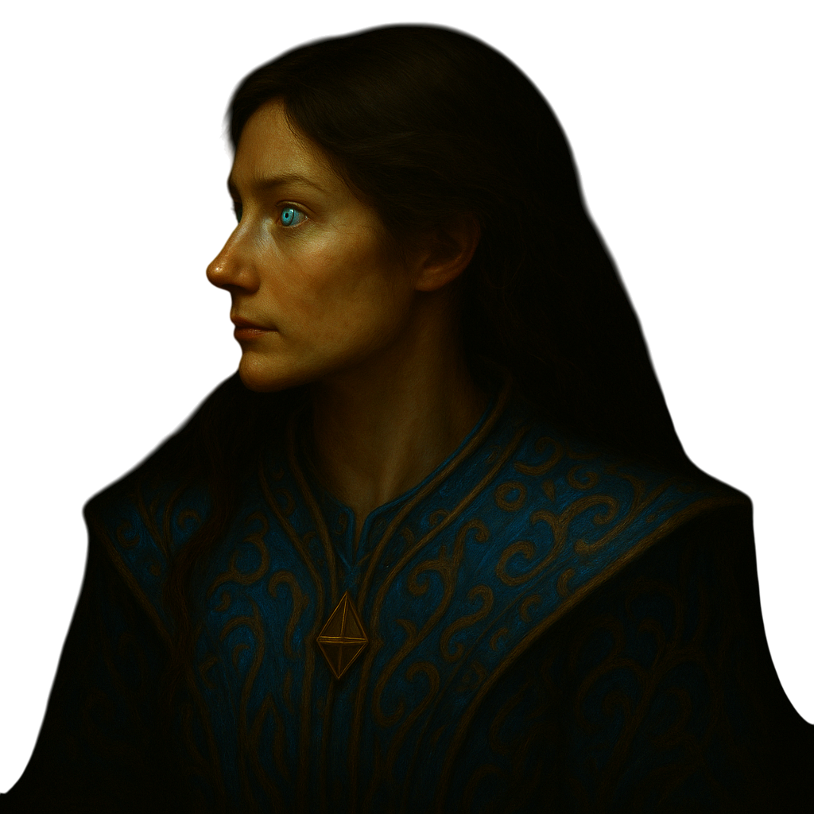
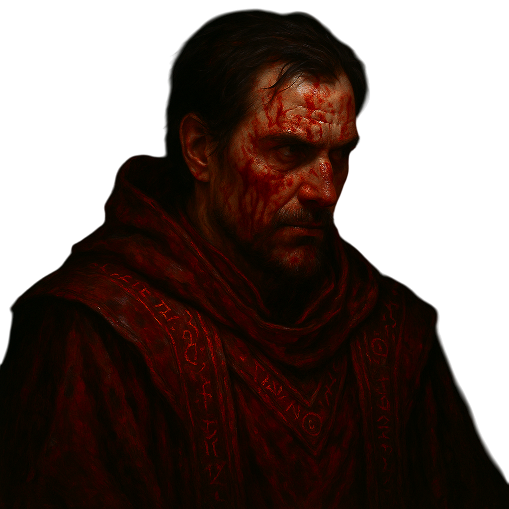
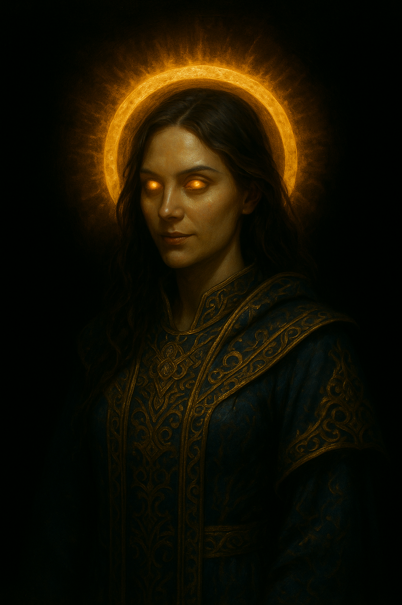
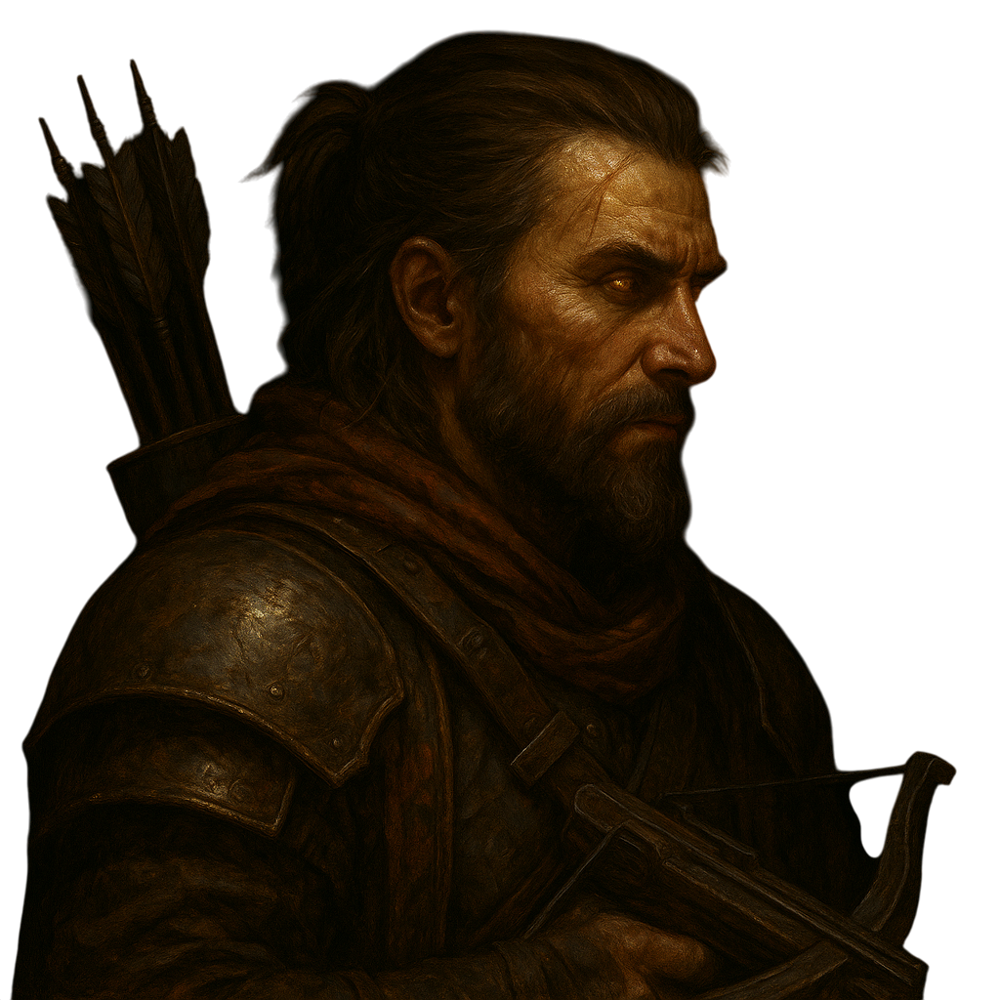
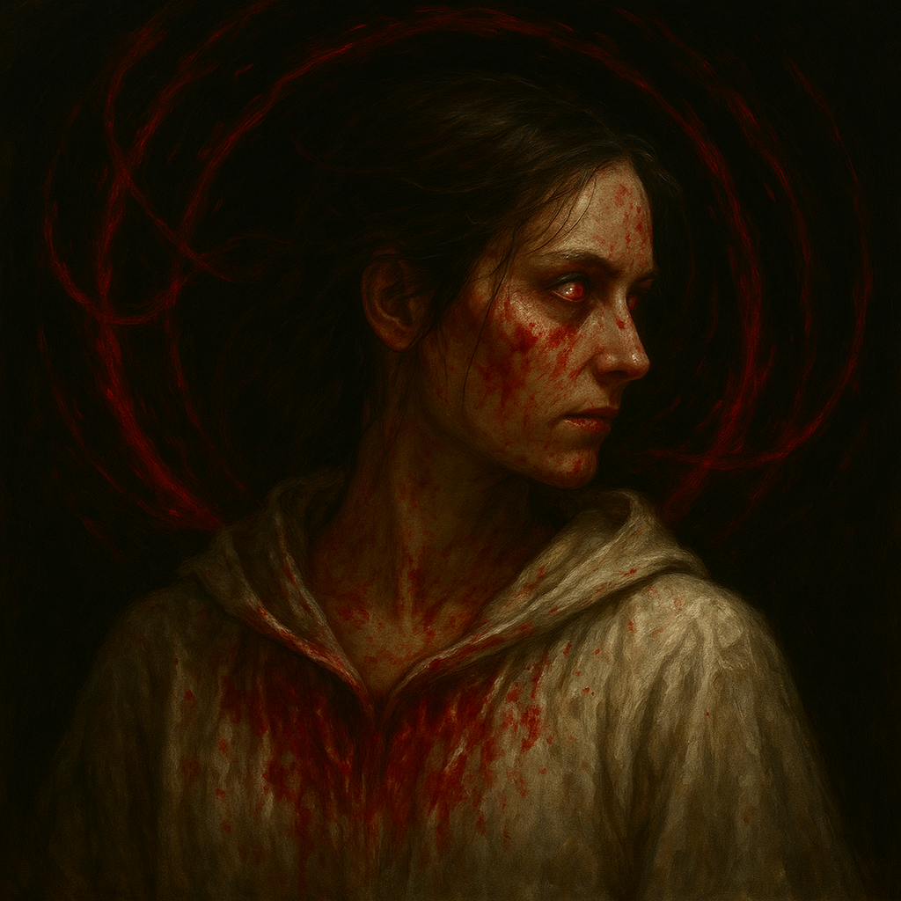
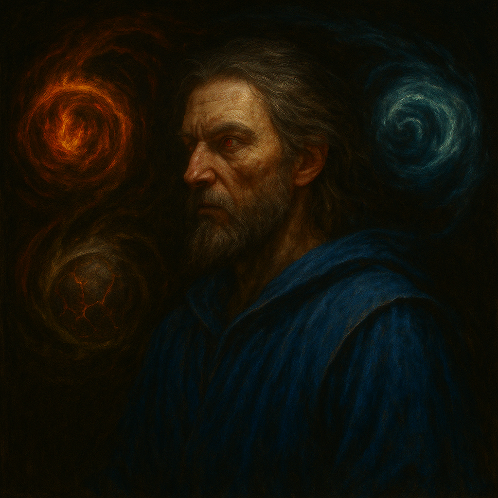
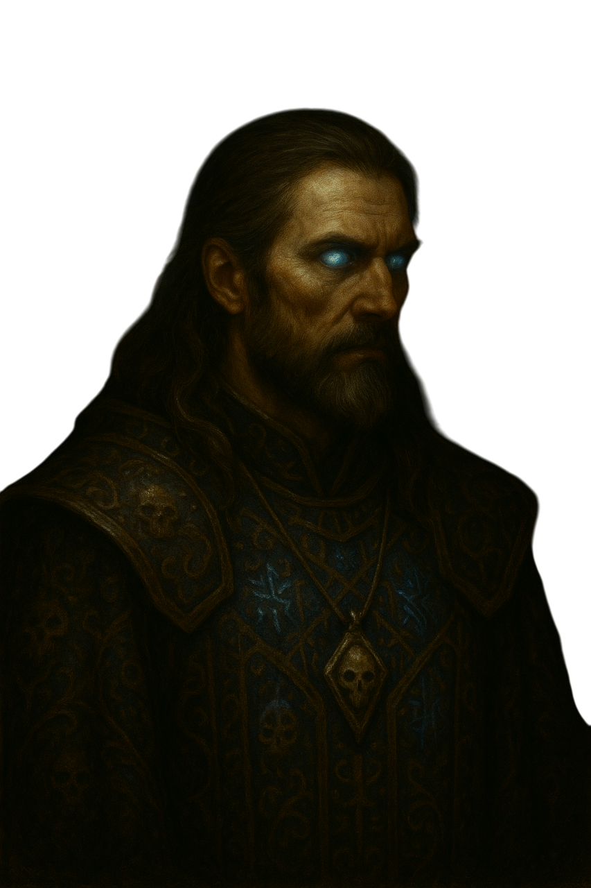
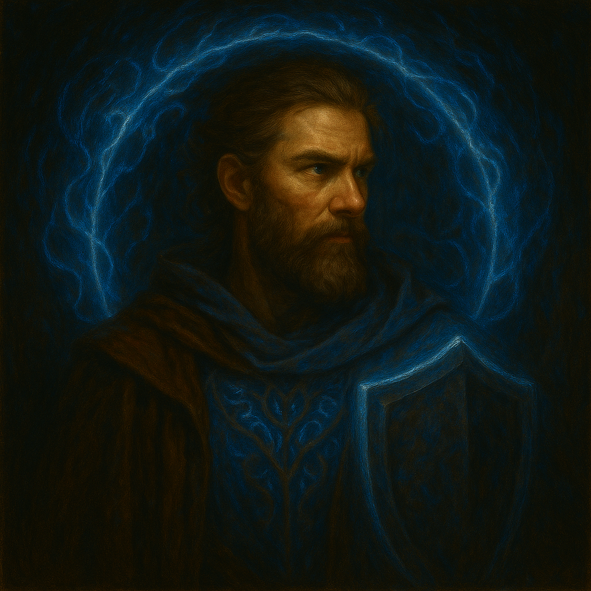

|
昇華 是能塑造你玩法的強大專精，會給予獨特的技能與加成。 昇華是透過一個名為 統治之石 的特殊護身符給予，而它只有在完成數場特殊戰鬥後才能取得。 統治之石可以透過完成特定挑戰進一步升級（也就是繼續昇華），其中一些挑戰與非常困難的終局內容有關。 昇華共有 5 個階層，每個挑戰都比前一個更難，但加成也更強。 統治之石 無法與其他角色共用 。同一時間只能裝備一顆統治之石。 不用說，每個階層都只能達成一次。不過你可以依任意順序達成。 統治之石無法以一般方式修改（無法墮落、受膏、拆解成楓葉等）。 由於引擎限制，死亡後 你必須重新裝備 統治之石，才能恢復加成。 |
|
若要取得 統治之石，你需要擊殺 5 個特殊的超級精英 （地獄難度） ，牠們散布在庇護之地各處， 並轉化牠們各自掉落的元素寶珠，以取得 創造之球. 接著可以把寶珠與特定顏色的寶石一起轉化，解鎖你選擇的昇華。提示：第 1、2、3 幕各有一個超級精英。第 5 幕有 2 個，第 4 幕沒有。 |
| 輸入 | 輸出 |
|
創造之球 2 瑕疵藍寶石 2 瑕疵黑曜石 |
戰鬥法師升華石 |
|
創造之球 1 瑕疵黑曜石 1 瑕疵藍寶石 1 瑕疵綠寶石 1 瑕疵紅寶石 |
覺醒的升華石 |
|
創造之球 2 瑕疵黑曜石 2 瑕疵綠寶石 |
劍術大師崇拜之石 |
|
創造之球 2 瑕疵綠寶石 2 瑕疵紅寶石 |
遊牧者的崛起石 |
|
創造之球 2 瑕疵黑曜石 2 瑕疵紅寶石 |
鐵矛升華石 |
|
創造之球 2 瑕疵綠寶石 2 瑕疵藍寶石 |
秘法師崛起石 |
|
創造之球 2 瑕疵紅寶石 2 瑕疵藍寶石 |
靈魂守護者崇高之石 |
|
創造之球 4 瑕疵綠寶石 |
神射手升華石 |
|
創造之球 4 瑕疵藍寶石 |
星之出生的升華石 |
|
創造之球 1 瑕疵紅寶石 1 瑕疵黑曜石 1 瑕疵藍寶石 |
血法師的昇華石 |
|
創造之球 4 瑕疵紅寶石 |
生命破壞者崇高石 |
|
創造之球 1 瑕疵紅寶石 1 瑕疵黑曜石 1 瑕疵綠寶石 |
世界塑造者的升華石 |
|
創造之球 1 瑕疵黑曜石 1 瑕疵綠寶石 1 瑕疵藍寶石 |
姿態舞者的超越石 |
|
創造之球 1 瑕疵綠寶石 1 瑕疵紅寶石 1 瑕疵藍寶石 |
法力守護者崇高石 |
|
創造之球 4 瑕疵黑曜石 |
狂戰士的崛起石 |
|
在地獄難度擊殺尼拉塞克領域中的尼拉塞克，並把統治之石與其自身轉化，即可達成第二階層。 必須在角色身上的漩渦效果仍在時進行轉化。 |
| 輸入 | 輸出 |
| 統治之石 |
統治之石 已升級為第 2 階層 |
|
擊殺超級崔斯特姆的所有頭目 （彼此間隔不超過一分鐘，且不能死亡）， 並把統治之石與楓葉一起轉化，即可達成第三階層。 即使擊殺最後一個頭目後角色身上仍有漩渦效果，若距離擊殺第一個頭目已超過 1 分鐘，也不會成功。 |
| 輸入 | 輸出 |
|
統治之石 楓葉 |
統治之石 已升級為第 3 階層 |
|
收集 10 顆從任何終局地圖頭目身上掉落的 原始靈魂石
，即可達成第4階層。統治之石一次只能與一顆原始之石轉化。在統治之石中收集到 10 顆原始靈魂石後，就能與 2 片楓葉一起轉化，昇華到第 4 階層。 |
| 輸入 | 輸出 |
|
統治之石 捕獲的原始靈魂石：10/10 2 片楓葉 |
統治之石 已升級為第 4 階層 |
|
擊殺任何第 5 階層地圖的頭目，並把統治之石與 3 片楓葉一起轉化，即可達成第五階層。 必須在角色身上的漩渦效果仍在時進行轉化。 |
| 輸入 | 輸出 |
|
統治之石 3 片楓葉 |
統治之石 已升級為第 5 階層 |








